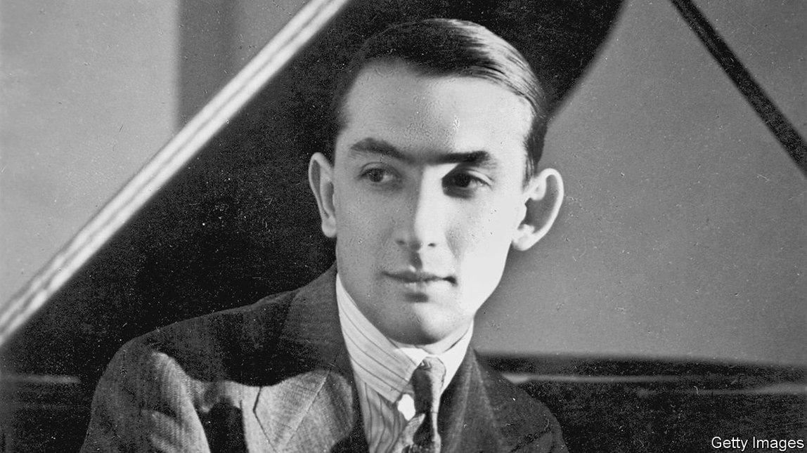

2021-06-25T15:49:50+00:00
程序编曲
计算机作曲
或许不久后音乐会上将奏响人工智能谱写的曲子
现如今，只要有台电脑，人人都能是作曲家——算是吧。给谷歌开发的Magenta这类商业软件一首歌的前几个音符，它就能接着创作出欢快悦耳的旋律来。悦耳，却不够复杂精妙。至少，奥地利林茨的约翰内斯·开普勒大学（Johannes Kepler University）的格哈德·威德默（Gerhard Widmer）是这么觉得。
威德默认为，“软件创作出来的东西可能包含某些统计学上的特性。不能说它不和谐，但它实际上不是音乐……软件会创作一支持续三天的曲子，因为它对自己想要做的事没有概念。它不知道事物需要有结尾、开头和中间部分。”他认为他能做得更好。他想利用人工智能去探索干预听众的预期会如何影响他们对音乐的感知，然后再利用这些知识打造软件，让它能写出更接近贝多芬而不是《咩咩小黑羊》的乐曲。这就意味着要赋予计算机感知微妙之处的能力，目前它们还无法察觉这些，但通过最新的技术或许可以学会这种能力。为此，威德默正在开展一个名为“音乐何去何从？”（Whither music?）的项目——这个项目名称借用了20世纪著名作曲家伦纳德·伯恩斯坦（Leonard Bernstein）1973年在哈佛大学的一个系列讲座。
人类在听音乐时，会下意识地预测下一个音符是什么。作曲家使用的一个技巧是操弄这些期望——有时让下一个音符符合预期，有时故意来个意想不到的转折。随后，演奏者通过增加表现力来加强这种对情感的操纵，比如更大声地演奏特定的乐句或比前面的乐句更多断奏。因此，威德默正在做的一件事便是教计算机模仿这一点。
为此，他和同事们收集了由专门设计的乐器录制的大量录音，尤其是贝森朵夫290 SE，这是一种上世纪80年代制造的音乐会钢琴，它的制造商悄悄在琴上安装了传感器，可以非常精确地测量钢琴家按键的力度和时间点。在他们收藏的录音中，最珍贵的一套是由传奇音乐会钢琴家、肖邦专家尼基塔·马加洛夫（Nikita Magaloff，见图）用贝森朵夫290 SE演奏的，几乎囊括了所有肖邦钢琴独奏作品。这些都是马加洛夫于1992年去世前不久在维也纳举办的一系列六场音乐会上录制的。
威德默团队的软件从这些和其他级别更低的录音中获取数据，并将之与作曲家写出的乐谱做比较。它正在寻找二者间的差异，比如演奏者在某处比原作的拍子慢了或快了几毫秒，或在演奏某处音符时比乐谱规定的更有力。通过分析数千场演奏，并将它们与作曲家乐谱的数字化版本做比较，软件了解了演奏者在演奏时选择加强力度的部分，从而了解到这些演奏者觉得听众会对什么内容特别感兴趣。
其他算法正在被教授作曲的规则。“（现有的软件模型）用前面所有已经被演奏过的音符去预测下一个音符，这和人类作曲家的作曲方式毫无关系，”威德默解释说，“作曲是一个需要顾及结构的规划过程。我们想打造出能够同时在几个层面作出预测的模型。”他的团队正在为不同的音乐元素设计和训练单独的模块：旋律、节奏、和声等——计划是将它们组合成一个主程序，可以用演奏和总谱来做整体训练。
一旦完成，生成的兆字节音乐大师将不仅决定音符的排列顺序，而且会决定应该这样排列的原因以及演奏音符的方式。“它不会说‘从统计学的角度，下一个音符可能是C’，而是会说，‘我认为接下来的四小节会出现某种IV-I-V和声（西方音乐中一种常见的和弦进行法），因为我们在乐曲前面部分一段类似的旋律中已经有过类似的形式’。”
这类软件的应用可能不限于作曲。现有的“推荐”算法很难生成符合特定音乐偏好的播放列表。近期的一篇论文显示，现有算法擅长为“杂食”的流行音乐爱好者推荐歌曲，但对那些喜欢特定音乐类型——比如重金属或说唱——的听众就力不从心了。了解音乐期望值的软件可能会表现更佳。一款知道自己要从音乐中寻找什么的程序可能会发现Skepta或Slayer的音乐中包含某种类型的音乐惊喜，并能在此基础上推荐带有类似惊喜的新的音乐。
计算机软件是否能够写出肖邦或Cream乐队级别的音乐，还有待观察。对此威德默始终持怀疑态度。但看不出有什么理由认为这不可能发生。伟大的艺术往往是知晓何时遵守规则、何时打破规则的产物。而这一点正是他尝试教会机器的。
2021-06-25T15:49:50+00:00
Programmes by programs
Composing by computer
Concerts may soon feature music written by artificial intelligence
THESE DAYS, anyone with a computer can be a composer. Sort of. Give a piece of commercial software such as Magenta, developed by Google, the first few notes of a song, and it will make something merrily tuneful out of them. Tuneful, but not sophisticated. At least, that is the view of Gerhard Widmer of Johannes Kepler University, in Linz, Austria.
In Dr Widmer’s opinion, “what they create may contain certain statistical properties. It’s not dissonant, but it’s not actually music...It would create a piece that would last three days because it has no notion of what it wants to do. It doesn’t know that things need an end, a beginning, and something in-between.” He thinks he can do better. He wants to use artificial intelligence to explore how toying with a listener’s expectations affects the perception of music, and then to employ that knowledge to create software which can produce something more akin to Beethoven than “Baa Baa Black Sheep”. That means giving computers an ability to perceive subtleties they cannot currently detect but might, using the latest techniques, be able to learn. To this end, Dr Widmer is running a project called “Whither music?”—a title borrowed from a lecture series given at Harvard University in 1973 by Leonard Bernstein, a celebrated 20th-century composer.
When human beings listen to music, they subconsciously predict what the next note will be. One trick composers use is to toy with these expectations—sometimes delivering what is expected and sometimes deliberately taking an unexpected turn. Performers then enhance that emotional manipulation by adding expression—for example, by playing a particular phrase louder or more staccato than the one which came before. One thing Dr Widmer is doing, therefore, is teaching computers to copy them.
To this end, he and his colleagues have amassed a huge body of recordings captured on specially designed instruments, notably the Bösendorfer 290 SE, a type of concert piano made in the 1980s which was rigged by the manufacturers with sensors that measure the force and timings of the pianist’s key-pressing with great accuracy. The jewel of their collection is a set of performances on a 290 SE by Nikita Magaloff (pictured), a legendary concert pianist and Chopin expert, of almost all of Chopin’s solo piano work. These were recorded at a series of six concerts which Magaloff gave in Vienna, shortly before his death in 1992.
The team’s software takes data from these and other, humbler recordings and compares them with the score as written by the composer. It is looking for mismatches between the two—places, for instance, where the performer misses the beat by a few milliseconds or plays a note more forcefully than the score indicates. By analysing thousands of performances and comparing them with digitised versions of the composers’ scores, the software learns what performers are choosing to accentuate when they play, and thus what those performers think is particularly interesting to the audience.
Other algorithms are being taught the rules of composition. “[Existing software models] take all the past notes that have already been played and predict the next note, which has nothing to do with how a human composer would compose,” Dr Widmer explains. “Composition is a planning process that involves structure. We want to create models that make predictions at several levels simultaneously.” The team are designing and training individual modules for different elements of music: melody, rhythm, harmony and so on—with the intention of combining them into a master program that can be trained on performances and scores in toto.
Once complete, the resulting megabyte maestro will decide not just which note follows which, but why that should be so and how that note should be played. “Instead of saying, ‘the next note is statistically likely to be a C’, it would say, ‘I believe that the next four bars will feature some kind of IV-I-V harmony [a common type of chord progression in Western music], because we had a similar pattern in a similar melodic context earlier in the piece’.”
Software of this sort might have applications beyond composition. Existing “recommender” algorithms struggle to generate musical playlists that appeal to particular tastes. A recent paper showed that they are good at suggesting pieces for fans of pop music with catholic appetites, but not for those who prefer a specific genre, such as heavy metal or rap. Software that understands musical expectancy might do a better job. A program which knows what to listen out for might discover that the music of Skepta or Slayer has specific types of musical surprises within it, and, on this basis, be able to recommend new music with similar surprises.
Whether computer software will ever be able to write music that stands up to comparison with the likes of Chopin or Cream remains to be seen. Dr Widmer remains sceptical, but it is hard to see why. Great art is often a product of knowing when to obey the rules and when to break them. And that is exactly what he is teaching his machines. ■
2021-06-25T15:49:50+00:00
程序編曲
計算機作曲
或許不久後音樂會上將奏響人工智能譜寫的曲子
現如今，只要有台電腦，人人都能是作曲家——算是吧。給谷歌開發的Magenta這類商業軟件一首歌的前幾個音符，它就能接着創作出歡快悅耳的旋律來。悅耳，卻不夠複雜精妙。至少，奧地利林茨的約翰內斯·開普勒大學（Johannes Kepler University）的格哈德·威德默（Gerhard Widmer）是這麼覺得。
威德默認為，“軟件創作出來的東西可能包含某些統計學上的特性。不能說它不和諧，但它實際上不是音樂……軟件會創作一支持續三天的曲子，因為它對自己想要做的事沒有概念。它不知道事物需要有結尾、開頭和中間部分。”他認為他能做得更好。他想利用人工智能去探索干預聽眾的預期會如何影響他們對音樂的感知，然後再利用這些知識打造軟件，讓它能寫出更接近貝多芬而不是《咩咩小黑羊》的樂曲。這就意味着要賦予計算機感知微妙之處的能力，目前它們還無法察覺這些，但通過最新的技術或許可以學會這種能力。為此，威德默正在開展一個名為“音樂何去何從？”（Whither music?）的項目——這個項目名稱借用了20世紀著名作曲家倫納德·伯恩斯坦（Leonard Bernstein）1973年在哈佛大學的一個系列講座。
人類在聽音樂時，會下意識地預測下一個音符是什麼。作曲家使用的一個技巧是操弄這些期望——有時讓下一個音符符合預期，有時故意來個意想不到的轉折。隨後，演奏者通過增加表現力來加強這種對情感的操縱，比如更大聲地演奏特定的樂句或比前面的樂句更多斷奏。因此，威德默正在做的一件事便是教計算機模仿這一點。
為此，他和同事們收集了由專門設計的樂器錄製的大量錄音，尤其是貝森朵夫290 SE，這是一種上世紀80年代製造的音樂會鋼琴，它的製造商悄悄在琴上安裝了傳感器，可以非常精確地測量鋼琴家按鍵的力度和時間點。在他們收藏的錄音中，最珍貴的一套是由傳奇音樂會鋼琴家、肖邦專家尼基塔·馬加洛夫（Nikita Magaloff，見圖）用貝森朵夫290 SE演奏的，幾乎囊括了所有肖邦鋼琴獨奏作品。這些都是馬加洛夫於1992年去世前不久在維也納舉辦的一系列六場音樂會上錄製的。
威德默團隊的軟件從這些和其他級別更低的錄音中獲取數據，並將之與作曲家寫出的樂譜做比較。它正在尋找二者間的差異，比如演奏者在某處比原作的拍子慢了或快了幾毫秒，或在演奏某處音符時比樂譜規定的更有力。通過分析數千場演奏，並將它們與作曲家樂譜的數字化版本做比較，軟件了解了演奏者在演奏時選擇加強力度的部分，從而了解到這些演奏者覺得聽眾會對什麼內容特別感興趣。
其他算法正在被教授作曲的規則。“（現有的軟件模型）用前面所有已經被演奏過的音符去預測下一個音符，這和人類作曲家的作曲方式毫無關係，”威德默解釋說，“作曲是一個需要顧及結構的規划過程。我們想打造出能夠同時在幾個層面作出預測的模型。”他的團隊正在為不同的音樂元素設計和訓練單獨的模塊：旋律、節奏、和聲等——計劃是將它們組合成一個主程序，可以用演奏和總譜來做整體訓練。
一旦完成，生成的兆字節音樂大師將不僅決定音符的排列順序，而且會決定應該這樣排列的原因以及演奏音符的方式。“它不會說‘從統計學的角度，下一個音符可能是C’，而是會說，‘我認為接下來的四小節會出現某種IV-I-V和聲（西方音樂中一種常見的和弦進行法），因為我們在樂曲前面部分一段類似的旋律中已經有過類似的形式’。”
這類軟件的應用可能不限於作曲。現有的“推薦”算法很難生成符合特定音樂偏好的播放列表。近期的一篇論文顯示，現有算法擅長為“雜食”的流行音樂愛好者推薦歌曲，但對那些喜歡特定音樂類型——比如重金屬或說唱——的聽眾就力不從心了。了解音樂期望值的軟件可能會表現更佳。一款知道自己要從音樂中尋找什麼的程序可能會發現Skepta或Slayer的音樂中包含某種類型的音樂驚喜，並能在此基礎上推薦帶有類似驚喜的新的音樂。
計算機軟件是否能夠寫出肖邦或Cream樂隊級別的音樂，還有待觀察。對此威德默始終持懷疑態度。但看不出有什麼理由認為這不可能發生。偉大的藝術往往是知曉何時遵守規則、何時打破規則的產物。而這一點正是他嘗試教會機器的。